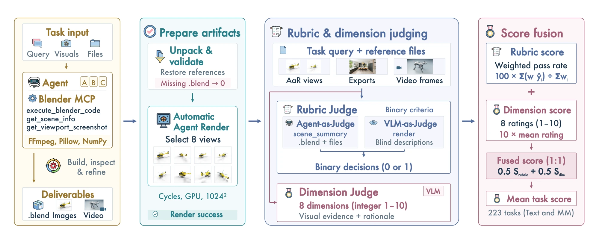

A native project
The agent receives the brief, references and attachments, then creates an editable Blender project. Evaluation rubrics stay hidden during generation.
A benchmark for visual creation agents
Benchmarking Visual Agents for 3D Creation
from Real-World References
1Zhejiang University2Alibaba Token Hub, Alibaba Group3The Chinese University of Hong Kong4Fudan University5Nanyang Technological University
English · 1 min 11 sec
Can a visual agent turn a real-world brief into a complete, editable 3D scene?
BlenderWorld asks agents to interpret text, images and videos, work inside Blender, and deliver native projects alongside rendered media. Tasks span architecture, characters, products, animation and more, with requirements on both appearance and the structure behind it.
59 tasks also include specification attachments. All agents are evaluated on the same 223 tasks.
The complete main table, with scores on a 0–100 scale.
GPT-6-Astra leads the benchmark.
Even the leading model passes every criterion on fewer than half of all tasks.
GPT-6-Astra over Opus-5 on image and video inputs.
Overall Mean task score across all 223 tasks; each task combines 50% Rubric and 50% Dimension.
Text / MM Mean scores on 78 text tasks and 145 multimodal tasks (130 image + 15 video).
Rubric / Dimension Weighted binary requirement satisfaction / mean quality across eight visual dimensions, each normalized to 0–100.
Full pass Percentage of tasks that pass every rubric criterion. It does not mean an overall score of 100.
Turns / Tools Mean agent turns and tool calls per task, as reported in the manuscript.
Output tokens Mean generated tokens per task, in thousands (K). Failed evaluations receive zero and remain in score denominators.
Look beyond the average
Select a category to compare all 13 models.
Category scores use all tasks in the selected category, including failed evaluations.
Open a scene. Inspect the brief. Turn it around.
Explore 181 submissions from seven models across 26 tasks, spanning expansive environments, animations and focused objects. Choose a model to explore its works, or open a task to compare up to seven submissions, with interactive 3D previews and paper-matched scores.
These are curated examples, not a random sample or a measure of average quality. Scores are from the frozen paper runs; 3D previews are derived from those same projects.
Check what a scene does, as well as how it looks.
The agent receives the brief, references and attachments, then creates an editable Blender project. Evaluation rubrics stay hidden during generation.
An independent rendering agent selects eight task-relevant views. Structure is checked through Blender tools; appearance is judged using renders and video frames.
Task-specific binary criteria measure requirement satisfaction. Eight visual dimensions measure quality. GPT-5.6-terra serves as the main automatic judge.
Overall = 0.5 × Rubric + 0.5 × Dimension
Both components on a 0–100 scale
A check against human preferences
The main judge’s overall scores agree with the majority human preference on 122 of 147 eligible pairs.
150 same-input pairs were rated by three reviewers. Skips count as ties; three pairs without a majority are excluded. A judge agrees only when its A-win, B-win or tie prediction matches the majority exactly.
| Judge model | Agreement ↑ | Spearman ρ ↑ |
|---|
Spearman correlation compares score differences sA − sB with majority labels A = +1, tie = 0, B = −1, over the same 147 pairs. Full Pearson and Kendall results are in the paper.